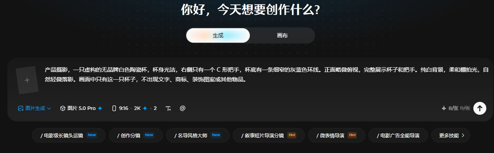
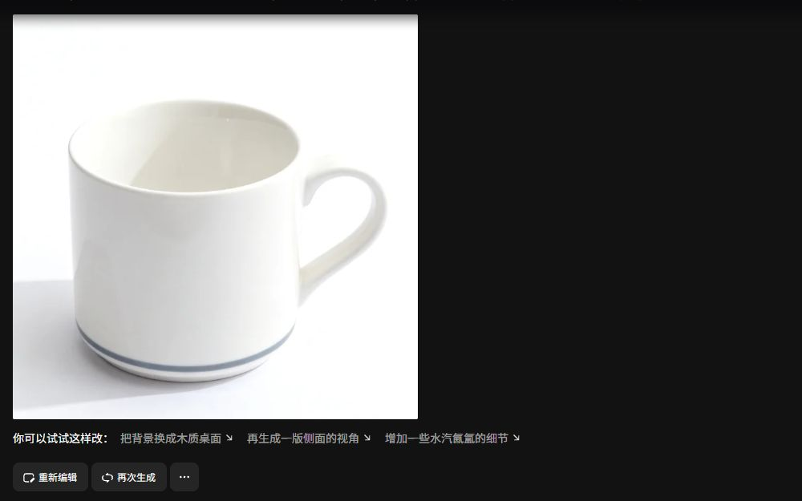

P25-jimeng-E1 · 用户自述
评价A自述包年，制作出镜视频时不满输出清晰度变化。
页面仅写3月15日 · 观察：2026-09-10
不采自报分辨率为平台统一现况，不核付款和原视频。
即梦提供中文提示、照片出镜、图像与视频生成及画布修改；团队空间和API另行收费。普通评论涉及个人出镜、指定动作和参考生成，尚不能确认职业作者身份。任务完成取决于会员资格、积分、排队及片段是否可用。
| 内容使用者 | 内容供给者 | 付款方 |
|---|---|---|
| 用照片或提示制作出镜、动图、角色参考和片段的人；可以是兴趣或工作用途，职业未核。 | 公开作品/同款与精选影像作者；官方展示不能证明自然供给占比。 | 个人会员/积分购买者、团队空间采购者和API购买者须分别看；仅个人有自述证据。 |
中国区iOS用户评价与官网出镜相关入口 · 有用户线索的候选画像
| 观察点 | 群体占比 |
|---|---|
| 2个可区分用户点 | 未知 |
| 问题 | 具体材料 |
|---|---|
| 任务 | 制作个人出镜视频，并让结果达到能观看的清晰度。 |
| 触发 | 有照片或出镜玩法，想生成一个个人片段；热门来源未核。 |
| 希望取得的结果 | 知道还有多少机会、等待多久，获得可看的结果。 |
| 困难 | 次数或资格不清楚；生成等待；输出清晰度与预期落差 |
| 需要的内容 | 清楚的输入条件、输出规格、次数/积分解释、失败后处理路径。 |
| 替代方法 | 手动拍摄和视频编辑或其他出镜工具；未观察这些用户迁移。 |
| 持续使用记录 | 2条评价分别谈出镜清晰度和可用次数；无法知道实际分享、内容质量与连续使用天数。 |
| 回访假设 | 新照片或新玩法可能触发再次尝试；没有固定回访证据。 |
| 付费记录 | 有包年自述；没有订单核验，不能推多数尝鲜者付费。 |
中国区iOS公开任务自述；不预设职业 · 有用户线索的候选画像
| 观察点 | 群体占比 |
|---|---|
| 3个可区分用户点 | 未知 |
| 问题 | 具体材料 |
|---|---|
| 任务 | 按参考生成动作片段，或先制作角色三视图再继续创作。 |
| 触发 | 简单文字或同款结果不足，需要主体、动作与画面对应。 |
| 希望取得的结果 | 取得可继续编辑的镜头，重试成本可预期。 |
| 困难 | 动作扭曲或不按参考；重试继续消耗资源；自己的动作视频上传受阻 |
| 需要的内容 | 参考素材要求、失败示例、静态角色与动态镜头分步方法。 |
| 替代方法 | 改参考、拆小镜头、换模型或外部后期；只有改提示/重试有直接自述。 |
| 持续使用记录 | 3条具体任务评论含动作变形、参考失败、上传问题；其中1位仍认可角色三视图。没有完整项目或客户验收。 |
| 回访假设 | 同一项目后续镜头可能触发回访，是推断；试错失败也可导致退出。 |
| 付费记录 | 有会员与重复扣积分的自述；不把自报单价和成功率当现行定价/总体成功率。 |
团队版产品；无普通采购者观察 · 官方目标支持的候选画像
| 观察点 | 群体占比 |
|---|---|
| 0个可区分用户点 | 未知 |
| 问题 | 具体材料 |
|---|---|
| 任务 | 多人在同一空间管理素材、生成记录和积分分配。 |
| 触发 | 项目需要多个协作者继续使用共同资产。 |
| 希望取得的结果 | 素材权限与预算分配清楚，成员离开后的归属可处理。 |
| 困难 | 个人与团队资源不当然互通；成员退出后资产访问变化；真实团队协作负担未知 |
| 需要的内容 | 空间规则、资产接续、积分分配及成员权限说明。 |
| 替代方法 | 共享文件与个人工具组合；未核真实团队替代方式。 |
| 持续使用记录 | 现行协议明确团队空间与权限；没有客户名称、成员实际操作或项目结果。 |
| 回访假设 | 项目资产继续留在团队空间是回访机制推断。 |
| 付费记录 | 存在独立团队付费产品，实际采购规模未知。 |
即梦API准入与购买规则 · 官方目标支持的候选画像
| 观察点 | 群体占比 |
|---|---|
| 0个可区分用户点 | 未知 |
| 问题 | 具体材料 |
|---|---|
| 任务 | 从现有程序或业务流程发起生成调用。 |
| 触发 | 已有批量任务或现有用户入口，需要减少人工转交。 |
| 希望取得的结果 | 接口能按需要返回结果，成本和权限可管理。 |
| 困难 | 会员与API额度分离；服务准入条件；持续调用与故障处理未核 |
| 需要的内容 | 准入、独立计费、最小任务、错误状态与输出边界。 |
| 替代方法 | 人工使用网页或其他生成API；未核实际迁移。 |
| 持续使用记录 | 仅官方规则与企业入口，资料不足，不能从API存在推真实开发者结构。 |
| 回访假设 | 已有业务持续运行是回访假设，没有独立调用轨迹。 |
| 付费记录 | 会员可提供购买资格，API仍另行购买与计量。 |
| 产品提供 | 内容形态 | 如何发挥作用 | 观察结果 | 剩余工作 |
|---|---|---|---|---|
| 中文提示、文/图生视频和探索同款入口 | 示例作品、同款入口、生成表单 | 先从已有表达获得方向，再换自己的图片或文字。 | 官网入口存在；个人出镜评论显示实际使用与可用次数/清晰度问题。 | 未运行同款，不知继承的参考与参数；不能把官网样片当普通成功率。 |
入口可见；具体使用有自述
| 产品提供 | 内容形态 | 如何发挥作用 | 观察结果 | 剩余工作 |
|---|---|---|---|---|
| 参考与首尾帧生成，静态图创作及画布局部编辑 | 图像、片段、画布操作与参考材料 | 先形成图像，再按镜头要求生成与修改；是可选操作链而非保证自动成片。 | 评论中动态结果失败与三视图仍可用并存。 | 排队完成不等于可用；动作、角色连续性、尝试成本与客户采用仍缺核验。 |
局部结果自述；完整交付未核
| 产品提供 | 内容形态 | 如何发挥作用 | 观察结果 | 剩余工作 |
|---|---|---|---|---|
| 团队空间、积分分配和独立API产品 | 团队资产/记录与接口服务 | 将人员协作或程序调用放进对应产品和权限。 | 协议确认可购买的产品和资源边界。 | 尚无普通团队/开发者使用记录；不能推采购效率、续费或收入贡献。 |
官方产品/规则
| 产品提供 | 内容形态 | 如何发挥作用 | 观察结果 | 剩余工作 |
|---|---|---|---|---|
| 会员资格、订阅积分、额外资源各有明确边界 | 付费协议与使用页面说明 | 会员与积分分别约束资格和消耗；最终仍需检查实际功能提示。 | 普通自述与协议均显示资格不等于无限生成。 | 自述里对动机和扣费的指控未证实；不检验账单或订阅执行。 |
规则事实和体验线索
评价A自述包年，制作出镜视频时不满输出清晰度变化。
页面仅写3月15日 · 观察：2026-09-10
不采自报分辨率为平台统一现况，不核付款和原视频。
评价B谈出镜合成次数不可用，并希望明确处理和回复。
页面仅写3月26日 · 观察：2026-09-10
仅可确认其陈述的使用任务；原因和当前状态未知。
评价C称做简单动作动图时扭曲、穿模，反复生成消耗积分。
2025-03-31 · 观察：2026-09-10
历史个案；开发者通用回复不是修复确认，不采自报成功率。
评价D称全能参考和修改提示后仍不满意，但角色三视图可用。
页面仅写5月11日 · 观察：2026-09-10
同一评价的正反两面保留；未核当前模型与成本。
评价E称模仿动作上传自己视频受阻，也不满会员仍需积分。
页面仅写4月28日 · 观察：2026-09-10
输入、设备和处理后续未知；不能断言所有人都无法上传。
另一评价自称使用约一个月，质疑生成限制和等待。
页面仅写4月4日 · 观察：2026-09-10
任务不够明确，仅补持续使用/退出线索，不计入任务画像的独立用户点。
官网公开列中文提示、图片/视频生成、首尾帧、智能画布及探索同款。
发布日期未标 · 观察：2026-09-10
仅能力入口，未操作同款、画布或生成；官网演示不计普通用户点。
付费协议区分个人/团队/积分/API；团队空间资产权限独立，API需满足会员准入并另外购买。
更新2026-08-03；生效2026-08-10 · 观察：2026-09-10
实际套餐、履约与效果未测；规则不等于采购者采用。
Apple托管公开用户评价 · 各评论日期分别记录 · 查阅：2026-09-10
完整名称URL正文可读；缩写URL失败不作依据。同评价重复渲染去重，不存昵称或开发者回复为用户点。
即梦官方 · 发布日期未标 · 查阅：2026-09-10
公开正文已读；未登录、未运行或付费。
即梦官方 · 2026-08-03 · 查阅：2026-09-10
公开正文已读；未登录、未运行或付费。
即梦的提示词示例和同款作品提供风格参考及创作入口；完整成片与作者阐述解释表达目标。获奖作品通常未附完整制作材料，不能标成提示词复刻教程。
一段描述对应的图片或视频示意
| 样例 | 可以取得什么 | 后续动作 | 条件与限制 |
|---|---|---|---|
| 首页游戏人物、太空插画和电影感场景示例。 | 展示能力和灵感，少量提示词可以参考。 | 官网提供前往创作，参数继承未验证。 | 没有公开每例模型版本、种子、重试和后期。 |
作者作品和继续创作入口
| 样例 | 可以取得什么 | 后续动作 | 条件与限制 |
|---|---|---|---|
| 首页创意社区区域。 | 结果展示与操作入口；详细继承内容资料不足。 | 可从同款入口开始，不能称已复制成功。 | 卡片本身不交代输入资产与制作流程。 |
一项完整作品及作者说明
| 样例 | 可以取得什么 | 后续动作 | 条件与限制 |
|---|---|---|---|
| 未来影像计划中的《灵眸幻境画中游》与《诗经》实验动画。 | 作品展示与创作背景，部分过程线索；不是完整教程。 | 可理解表达与工具分工，不能直接继承项目。 | 各作品披露字段不同；原始素材、分镜与工程文件未提供。 |
历史精选作品页的一篇作者说明，不代表官方生产示例或普通用户水平。
| 材料部分 | 观察到什么 | 作用分析 |
|---|---|---|
| 表达来源 | 作者说明借传统绘画的叙事方式构建长轴画面。 | 分析：解释内容为何这样设计，不只评价模型画质。 |
| 呈现方式 | 作品说明包含卷轴移动与音乐安排。 | 分析：视频意义来自画面顺序和声音，单张图不能承载全流程。 |
| 工具分工 | 说明列ChatGPT构思、SD相关生成与训练、即梦图生视频和画布修改。 | 分析：让读者识别即梦承担的环节，避免误把全部产出归给一个模型。 |
| 可复用材料缺口 | 页面提供阐述和展示，没有附完整提示、素材及画布配置。 | 分析：可以学习做法方向，无法仅凭该页复现作品。 |
不能从工具名单推断各工具贡献比例、工时或完整成片一键生成。
| 可取得或继承 | 还需准备 | 不能直接迁移 |
|---|---|---|
| 可参考题材描述、作品表达和工具分工；同款入口提供开始路径，但继承范围未核。 | 个人素材、叙事设计及必要后期；画布修改需要自己的可用资源与对应账户能力。 | 历史活动中的平台展示授权并不授予所有观看者复刻素材的权利；精选成片也不是可下载项目包。 |
即梦通过同款内容吸引日常创作，并用行业活动招募和展示成熟作者。历史赛事包含样片筛选、评审、展示与奖励兑现；这些赛事是否已成为常态运营，资料不足。
官网社区卡片有创作同款入口，示例与工具页相连。
| 执行与分工 | 触发与节奏 | 运营作用（分析） | 失效条件 |
|---|---|---|---|
| 作者供给作品，平台提供入口，使用者准备自己的创意与素材。 | 浏览到感兴趣作品时触发，不是固定活动。 | 分析：减少从空白构思开始的压力。 | 继承字段和实际成功率未核，不能认定已经完成激活。 |
2024赛事要求主题挑战赛申请者先提交样片，初审通过后才能参赛投稿。
| 执行与分工 | 触发与节奏 | 运营作用（分析） | 失效条件 |
|---|---|---|---|
| 作者准备样片，平台做初审与资格管理。 | 仅该届报名期间触发。 | 分析：先检查基本创作能力，再接收完整作品。 | 可能提高供给质量，也增加进入成本；初审通过率未知。 |
同届设专家、大众选择、合作方和周榜；大众奖综合社媒点赞与评委评分。
| 执行与分工 | 触发与节奏 | 运营作用（分析） | 失效条件 |
|---|---|---|---|
| 平台、评委和合作方分别选择，作者提交内容。 | 周榜仅在该次活动中按周；不能推断全年频次。 | 分析：专业判断、传播与合作偏好分别得到出口。 | 票数与作品质量可能不一致，分数权重未公开。 |
赛事要求审核后公开可见、首发原创；奖励有公示、通知及后续确认期限。
| 执行与分工 | 触发与节奏 | 运营作用（分析） | 失效条件 |
|---|---|---|---|
| 作者保证素材权利并完成领奖要求，平台通知和发放，实物由合作方处理。 | 投稿审核、评奖、获奖确认时触发。 | 分析：作品曝光和奖励都是需要执行的交付。 | 逾期、撤下或不符合资格可能失去奖励；没有执行复盘。 |
官方细则记活动期2024-05-08至06-07，属于历史单届规则。
规则明确包含初审、内容审核、评审协调、通知和奖励履约；平台工时与岗位未公开。
规则不证明实际招募人数、奖品全数发放、后续活跃，也不等于当前开放报名。
| 供给者回报 | 参与者回报 | 与付费的连接 |
|---|---|---|
| 历史活动同时提供奖项和展示；未来影像计划页面保留入选作品与作者阐述。 | 普通用户可尝试同款；成熟作者可能以作品被看见为动机，这是分析。 | 现行协议把会员、积分与API分开；活动参与和同款浏览到付费的路径缺少归因。 |
| 持续工作 | 尚未量化的成本 | 成立条件 |
|---|---|---|
| 活动规则要求审核、评审、通知及履约；展示页还需整理作品与作者说明。 | 分析：样片筛选、素材权利检查、合作方沟通都需投入，单独活动页不能替代这些工作。 | 有可参与的作者、清楚的内容要求、评审资源和兑现能力；无这些条件时规模越大组织成本越高。 |
即梦销售个人会员、团队空间、积分和API。个人尝试与组织持续交付对应不同采购关系，各自的付款构成和留存仍未知。
| 付款方 | 收入方式 |
|---|---|
| 个人创作者购买会员和积分；团队创建者为席位与团队积分付费；符合资格的会员另购API服务，火山引擎还有企业资源包入口。 | 订阅加额外积分；团队权益和资产在独立空间管理；API需符合条件并另行购买。消费会员并不自动覆盖API消费。 |
现行付费协议将个人会员分档，权益包括订阅积分、会员生成通道、去品牌水印及部分模型资格；有些特殊能力仍需另付积分或费用。推断：持续制作、交付格式和所需模型形成升级理由，单纯浏览探索页没有直接收费证据。
协议将周期发放积分、当日赠送积分和充值积分分开，赠送并非所有用户固定权益；充值积分有效期为2年。推断：日常补贴可以启动尝试，但有交付日期的用户需要可预期预算；不能把积分领取频率视为订阅意愿。
2026-08-10生效版本补充团队会员，面向3人及以上团队，个人与团队空间的积分、素材、资产和生成记录分别管理。推断：团队的采购理由包括人员协作、资产归属和使用管理。不能因为有团队版就假定企业收入已经成熟。
协议明确API只向特定会员开放，并需另购服务；火山引擎还展示即梦企业资源包。二者的账户、计费及适用模型需分别确认，不把活动折扣当长期标准价。多元拾光的廉价Token优势也应在明确模型、稳定性与交付成本后比较。
官网将探索、创作同款与未来影像计划连到工具。可以确认发现路径存在；没有证据表明普通发帖都获得现金分成，也未核到站内作者合作收入的普遍分配规则。作者能通过工具完成客户项目，与平台给每次投稿付钱，是两件事。
| 指标 | 披露值 | 期间与对象 | 解释 | 限制 |
|---|---|---|---|---|
| App月活跃用户 | 8736万 | 2026-06；榜单2026-07-06更新；AICPB的即梦App口径 | 提供移动端使用规模量级 | 非即梦官方披露，样本和去重方法本页未充分展示；不是Web访问量、付费人数或社区发帖人数 |
| 独立产品营收、付费人数和续费 | 未公开核实 | 截至2026-09-09；即梦个人、团队及API分别 | 不能计算付费率、ARPU或盈利 | 会员条款证明收费能力，不证明经营结果；字节及火山引擎整体数据不能替代 |
即梦官方 · 更新2026-08-03；生效2026-08-10 · 查阅：2026-09-09
已读原文；个人/团队/API、积分到期与额外收费边界；不作法律效力判断
火山引擎 · 未标日期 · 查阅：2026-09-09
搜索原文可读，直开动态壳；确认企业入口，未采用限时价作常态价
即梦官方 · 未标日期 · 查阅：2026-09-09
已读原文；图片视频、画布、探索与同款入口
AI产品榜 AICPB · 2026-07-06更新；数据2026-06 · 查阅：2026-09-09
已读原文；App MAU估计，测量和去重方法没有在产品页完整说明
已登录，默认 5.0 Pro 提交进入会员页；切换 4.0 后用既有赠送积分生成 1 张。离开后重新打开本次记录，恢复提示词和配置，未再生成。

生成模式、模型、比例、数量与按张成本放在同一输入区。
截图为初始两张配置；提交前另改为单张方图，实际结果见下方记录。
来源页面 ↗
图片 4.0 得到杯图；结果下提供修改建议、重新编辑和再次生成。
前一次 5.0 Pro 提交进入会员页。换模型后重新核对了数量，未沿用自动变回四张的配置。
来源页面 ↗围绕虚构白陶瓷杯，检查进入、配置、生成、保存与再使用。
完成一次生成、历史找回与配置复用。共激活提交两次，实际接收一个任务；使用已有赠送积分，未购买会员。尚未测试换参考图的第二次制作和长期归档。
已接收生成任务1次。仅使用既有免费资源；没有充值或公开发布。每平台最多 3 次提交，包含重试。
| 阶段 | 用户动作 | 可能遇到的障碍 |
|---|---|---|
| 发现与进入 | 通过作品、作者或展映活动产生创作兴趣。 | 喜欢成片不等于愿意自己制作。 |
| 第一次做成 | 准备分镜和参考，生成片段，再筛选剪辑。 | 可用片段与完整成片之间还有人工判断。 |
| 再次使用 | 为下一镜、下一集或修改意见继续制作。 | 用户可能转到剪辑软件，站内发帖不是唯一持续行为。 |
| 贡献给别人 | 作者解释参考、选片、失败与跨工具交接。 | 过程整理和答疑需要单独排期。 |
更换模型后输出数量从 1 自动变成 4，需要再次检查。结果页直接提供“把背景换成木质桌面”等续作建议，把下一步放在图片旁；只检验了重新编辑，未点击这些建议生成。
看完作品之后，用户需要找到方法说明和能继续制作的入口。如果只给提示词而不说明选片和剪辑，接手者仍不知道如何达到案例效果。
画布承担素材关系和接续制作；作品流承担发现。视觉风格是否有记忆点，需要另外比较原型，不能用任务价值代替视觉设计。
官网和开发者 App 说明提供图像、视频、智能画布、灵感社区与同款复用。流程包括自然语言生成、继续编辑、多轮尝试、分享链接或保存本地。它首先让用户判断结果，而非要求先理解底层模型文件。
2026 年 App 版本资料已出现 Agent、出镜和好友分享等方向；这里用于说明演化，不假定不同端、账号和地区均有一致入口。
2026 年官方活动信息中出现成长计划“造梦新章”及影视、设计、自媒体创作者的同题短片共创。由 Dreamina AI 主办的上海 Meetup 设置幕后分享、产品交流、共创与开放麦，并设置报名问卷、名额限制和候补审核。
这些安排给作者的价值不仅是算力，还有同行、反馈与展示。活动报名展示不能当到场率；单次共创也不能证明常态内容供给已经形成。
2025 年与上影相关伙伴的 AI 动画创作周提供 IP 蓝本；青年导演合作计划的现场报道记录团队短片首映及后续支持。它们是组织者和合作方共同提供的创作条件。
2026“新视觉”计划的第三方转载有投稿、传播与质量评选线索，但活动已在 6 月结束，原始完整细则未获取。不能以该转载的奖励或金额承诺现行权益。
8 月 10 日生效的付费协议区分会员、积分和另购 API；订阅积分与每日赠送资源有有效期，并明确每日赠送并非全部用户固定权益。不能沿用全员每天固定积分的旧描述。
由此推断，领取和消耗可能由到期压力影响。对多元拾光，首次成功应记录结果是否被采用、重试次数和实际用途；积分消耗可作成本记录，不能直接作为深度。
未来影像计划的作者制作说明包含构思、其他图像工具、即梦视频与局部修图、剪映等不同环节。2025 年武侠打斗作品说明进一步写出选分镜、图生视频、筛片段、调速和音效。
这些是具体作者的制作自述，可证明成片包含多步劳动；没有按其过程复现，也不把历史征集当作当前开放活动。
| 做法 | 依据 | 投入 | 调整条件 |
|---|---|---|---|
| 作者交参考、采用与淘汰片段、剪辑说明，产品先约定可用标准。 | 这样才能检查关键制作判断能否被解释和转移。 | 作者报价包含选片和修订，运营安排用户带自己的脚本试做，研发处理保存与接续阻塞。 | 用户拿着下一镜或真实修改回来，再扩大连续内容方向。 |
| 做法 | 依据 | 投入 | 调整条件 |
|---|---|---|---|
| 先看少数普通用户能否做出一个片段。 | 大赛可能只收到少数高手成片，仍无法看清新手卡点；团队还需承担评审与规则运营。 | 短期传播效果可能较小，但获得的过程更便于改产品。 | 多个用户已有稳定片段产出，且团队能支持制作与评审，再考虑征集。 |
官方 · 访问 2026-09-08
当前产品和同款入口
官方 · 含 2026-08 版本记录
开发者自述路径，不用于价格比较
官方 · 更新 2026-08-03；生效 08-10
每日赠送及会员积分边界
官方 · 2026-07 多条活动信息
官方活动存在；部分索引可读，奖励规则未取全
官方 · 已截止；确切举办日未核
审核报名、幕后分享与产品交流
官方合作伙伴 · 2025-03
IP 蓝本与合作，搜索正文可读
上观／文汇现场报道 · 2025-11-10
首映和行业支持的历史证据
第三方转述 · 2026-01-30；活动 6 月 30 日结束
原细则未取，只作历史机制线索
官方 · 更新日未核
作品质量与社区治理
官方 · 含 2024–2025 历史活动
作者跨工具制作说明，非当前招募承诺
平台作者 · 2025-10-10
作者自述选图、视频与后期过程